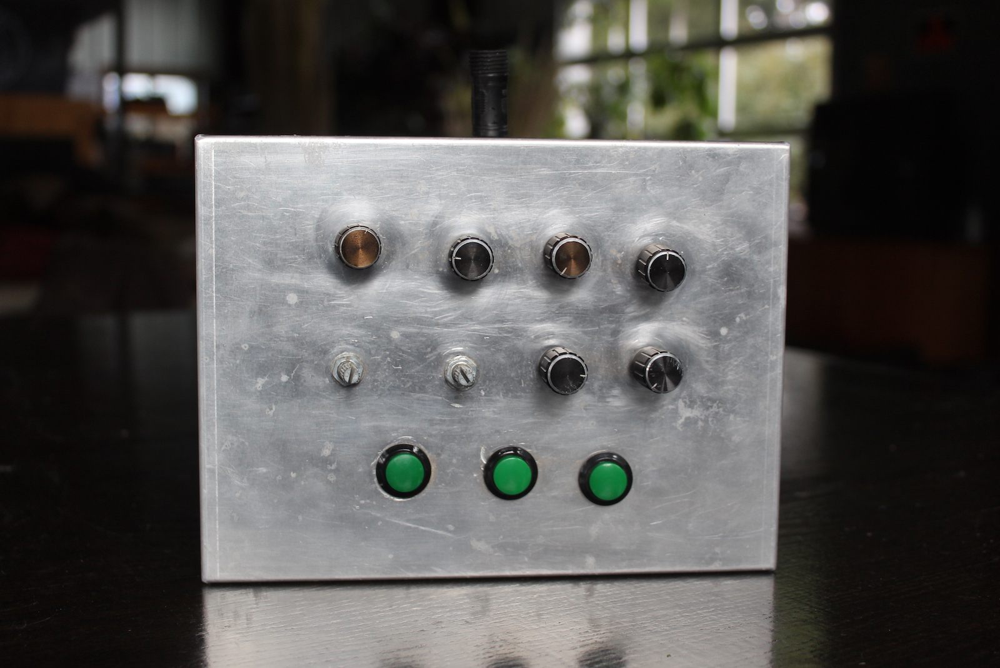
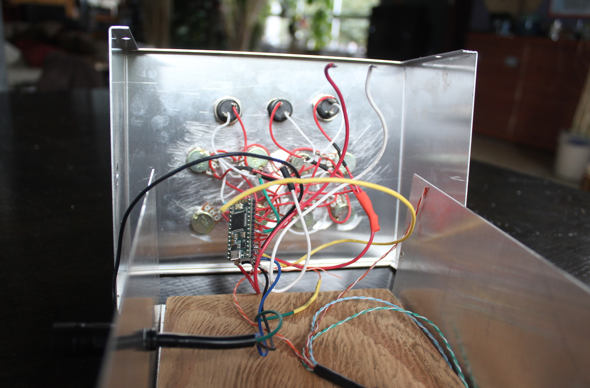

An LED installation with a custom-made controller. Knobs and buttons allow the user to choose and modulate different patterns.
In the video I attempt to demonstrate the controller, and largely fail. The project has since been rendered inoperable, so it'll have to do.
I scrapped this together with materials I had on-hand shortly before an event. I had originally started work on the controller for the tri pxl project, but I didn't have any modules in working condition.
The tri pxl code was designed around the concept of Rows. Each concentric triangle is modeled as a Row. The number and lengths of the Rows are configurable, and the patterns make use of a "row-aware" API, so the system is adaptable to a display of any shape that can be interpreted as a series of rows (in theory).
With zig zag I wanted to test that theory, so I made a shape with rows that are linear rather than circular. I also moved from the Arduino to the Teensy, for more pins and more memory in a small footprint.
Overall it worked pretty well; the code and controller worked without much fuss. The nature of the zigzag is that each row alternates direction, which looks good with some patterns but not others, so I added an option to reverse every other row.
For some reason I decided to use two Teensys – one to handle the knobs and buttons, and one to run the LEDs. To communicate the input state from one to the other, I ended up connecting them by their Serial ports, which meant writing a (very rudimentary) byte-level protocol.
That was kind of exciting because I rarely work at that level, but it ended up being flaky and would frequently become disconnected or garbled. In the future I would try to fit everything on a single board.
I originally experimented with 3D printing the controller, but I didn't like the results I was getting, so I bought a metal box and drilled holes in it. It has a decidedly amateur feel as the holes aren't even lined up well, but I think that adds to its charm :). I added a piece of wood to give it more weight and it feels quite nice to hold and use.
The wiring is a bit sketch, with the Teensy just floating inside the box, loosely held in place by the wires. I used a generic detachable three-pin connector to run power, ground, and data from the main installation.
I learned a lot during and after this project, and I wish to soon get around to building a new and improved v2!